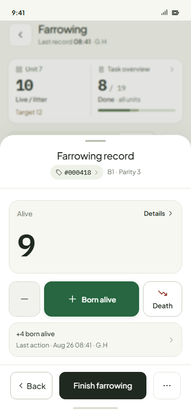
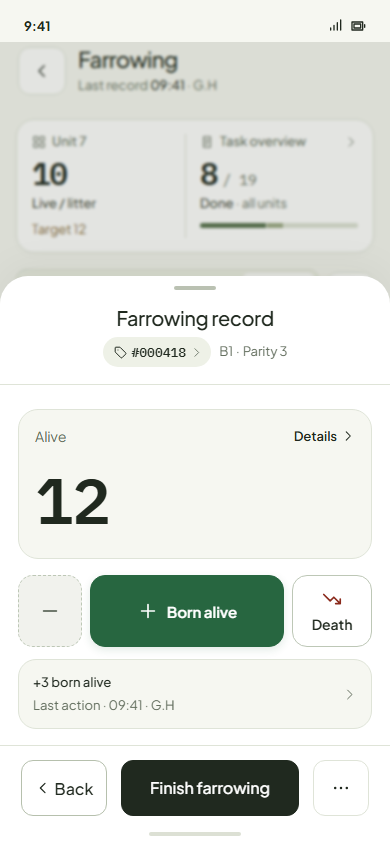
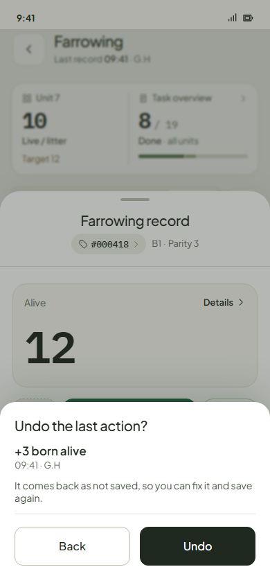
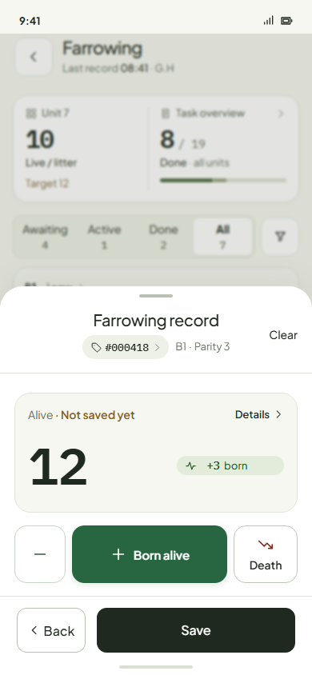

Farrowing · no Edit record · the redo for a fat finger
Undo the last save
Under the keys, one row says what the last action was, when, and who: “+3 born alive · Last action · 09:41 · G.H”. Tap it: Undo the last action? names it again, Back · Undo. Undo opens that visit again in the drawer, exactly as it was. You fix it with the same keys (− takes a born back, Death changes a death) and press Save.




Why this one
- It names what, when and who right in the drawer, no hop to Details, and the tap asks before anything changes.
- It replaces the card's quiet “Saved 08:20”, so nothing is said twice.
- Only the last action can be undone; undoing any line of the log would be Edit record again.
The rules
- Only the last action on this sow, and only for the worker who saved it. It goes once anything else is saved on her or she is finished. Everyone sees the row; for anyone else it is a plain line with nothing to tap.
- A death works the same way. “1 crushed” that was scours: Undo, open Death, change it, Save.
- Clear after Undo withdraws the visit, and the log keeps it as “Withdrawn”. Nothing disappears silently.
- Finish is never undone. Edit record, Edit on the finished record, Edit litter record in Actions, Correct born and Edit finish details all go.
Your calls
- Undo only for the worker who saved it? Recommend yes.
- Until the next save on her, or also a time limit (e.g. 30 minutes)? Recommend no clock: the next save closes it.
- The same Undo for the last Record dead after Finish? Recommend yes.